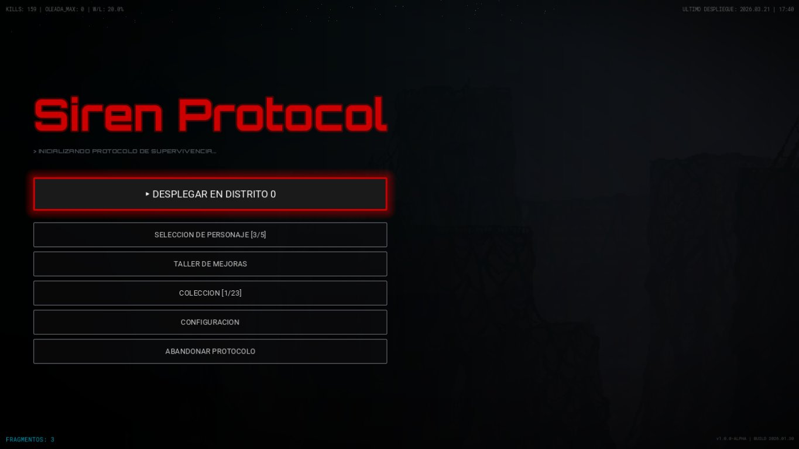
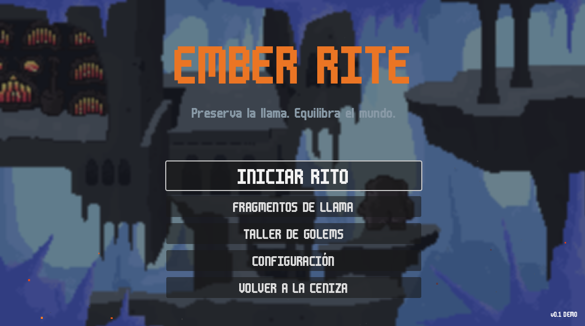

Construyo mundos antes de construir juegos.
El código y el universo crecen juntos.

Me llamo Agustín Aragón. Trabajo en Godot 4 y en desarrollo web. Mi proyecto principal es Siren Protocol — un roguelite que es el primer punto de entrada a un universo más grande, con su propia filosofía interna, su propia historia y su propia IA que toma decisiones que el jugador no comprende del todo.
Mi fortaleza no es técnica. Es que puedo documentar lo que construyo antes de construirlo — y esa capacidad de hacer que algo exista en papel antes de existir en código cambia cómo se construye todo lo demás.

Un golem de carbón frágil en un mundo polarizado entre el fuego y el hielo. La mecánica central es la gestión térmica: absorber calor de los hornos para sobrevivir zonas congeladas, expulsarlo para despejar el camino. Cada decisión es una pregunta — ¿lo guardo o lo uso ahora? Referentes de tono: Celeste, Hollow Knight.
Plataforma freemium de generación de respuestas con IA. Colaboración con Diego Aragón. Rol: diseño de interfaz, desarrollo frontend y mantenimiento del sitio.
Aplicación web para registro, consulta y administración de alumnos. Desarrollado en equipo como proyecto técnico de 6° año en la E.E.S.T. N°5.
algo de esto te reconoció.
Si necesitás una web, querés colaborar en Siren Protocol, o simplemente querés hablar de universos que todavía no terminaron de encenderse — escribime.
Siren Protocol busca colaboradores, artistas 2D, y personas que entiendan que los mejores juegos no son los más complejos. Son los más coherentes.
escribir